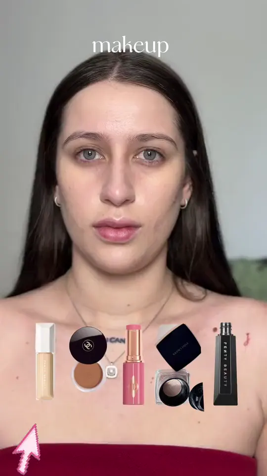
Transiciones
Ana Camila
@ana_acbgEdición y estrategia de redes con asistencia de marketing
Ver en InstagramGestión de redes sociales
Edición de videos premium
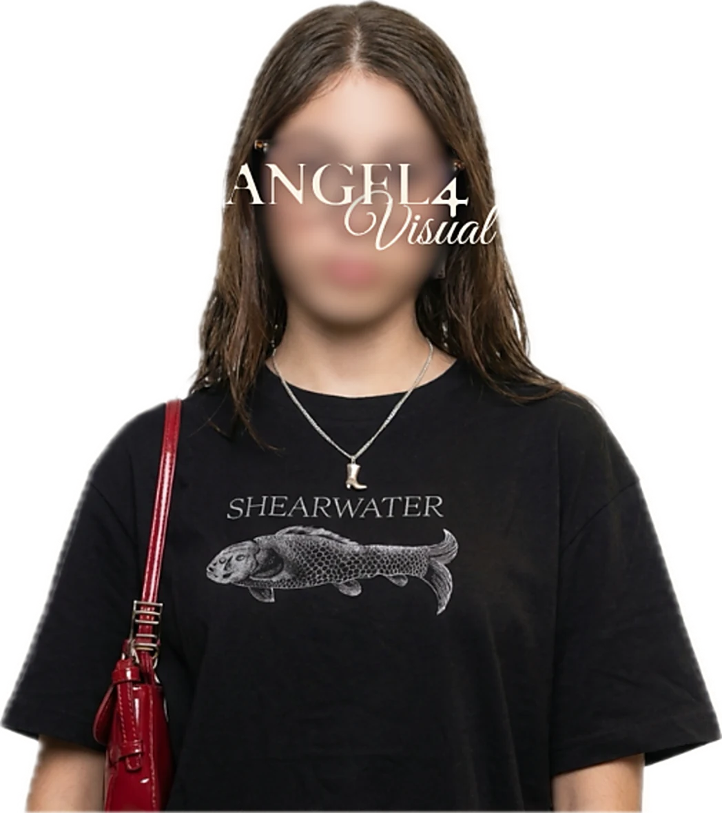
Bienvenido a mi portafolio
Un pedacito de mi trabajo, de mi esencia, de mi arte. Aquí verás cómo puedo ayudarte a transformar videos normales en contenido con dirección, claridad y una estrategia detrás. Nada es por gusto, todo cuenta algo. Espero que encuentres lo que viniste a buscar y, si no, pues que disfrutes de mi mundo.
Gestión de redes sociales
Edición de videos premium
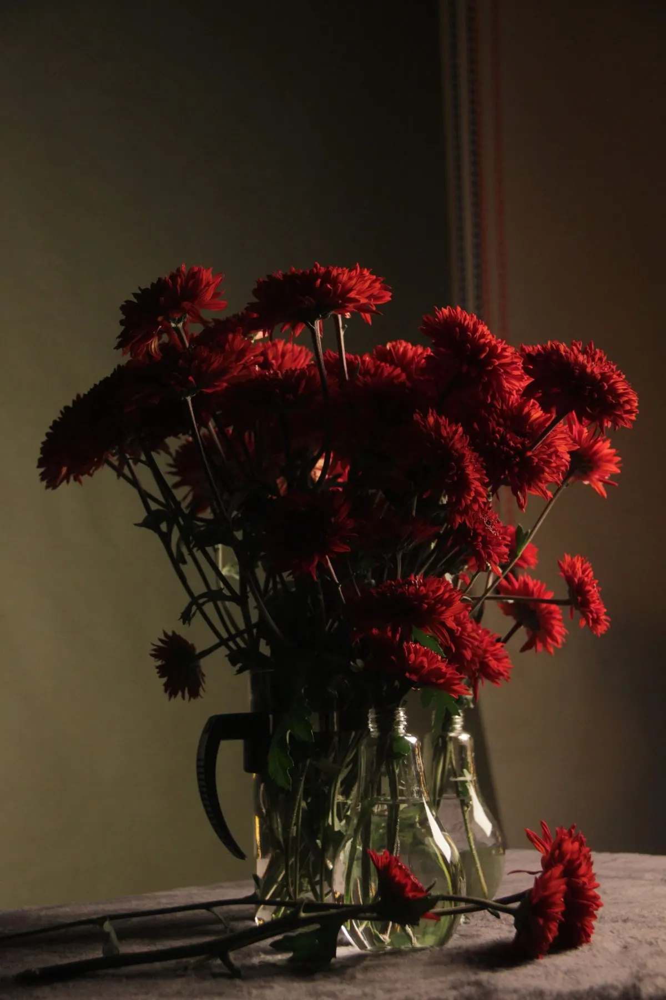
Soy Liz Ángela, estudié Marketing Digital y trabajo como editora de video y gestora de redes sociales. Transformo videos normales en contenido que atrae, retiene y conecta con las personas.
Cuido el ritmo, los cortes, la música y el color para que cada video se sienta tuyo. Edito pensando en quien lo ve, para que el mensaje llegue claro desde el primer segundo.
Corta: Reels · TikTok · Shorts
Media: Entrevistas · Cápsulas
Larga: YouTube · Formación
Me encargo de la edición, la planificación, el calendario de contenido y la estrategia, para que cada publicación tenga un propósito.
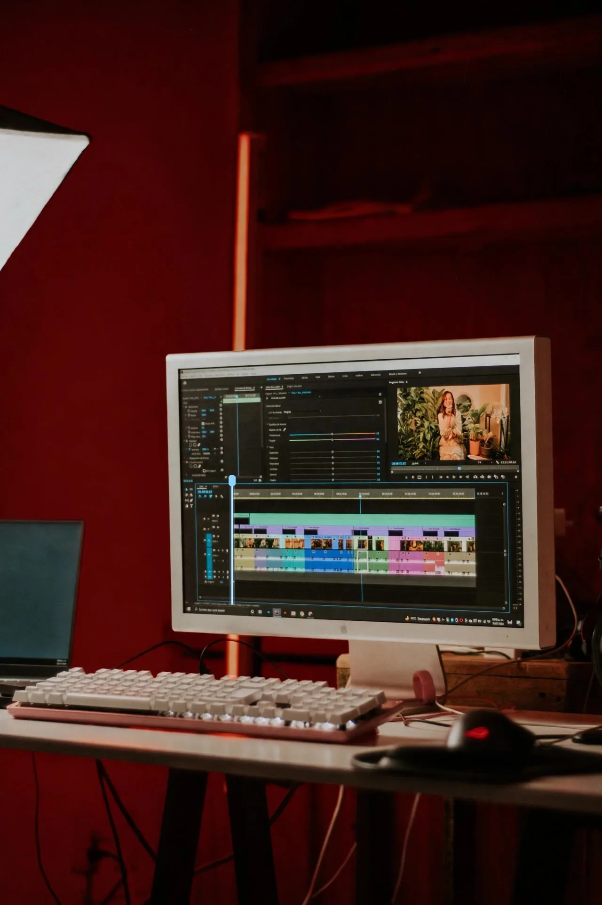
Cada corte lo pienso para que tu mensaje llegue con claridad y con ritmo. Cuido cada detalle, desde la primera idea hasta el último fotograma.
Cada video es una historia que cuido desde la primera idea hasta el último corte. Estos son algunos de los proyectos que he tenido el gusto de editar.

Transiciones
Edición y estrategia de redes con asistencia de marketing
Ver en Instagram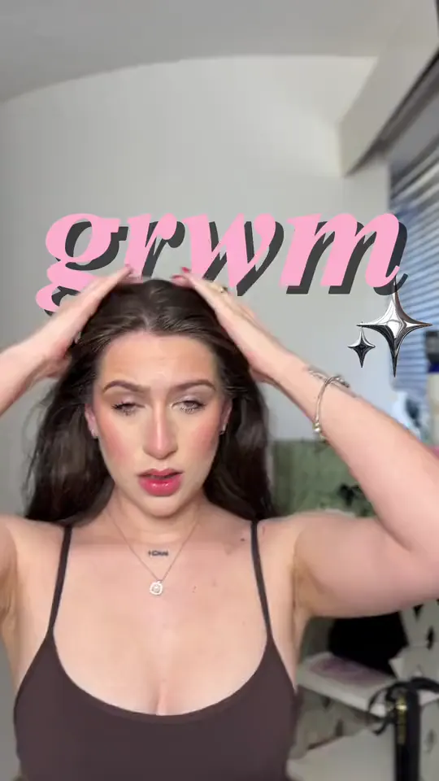
Transiciones
Edición y estrategia de redes con asistencia de marketing
Ver en Instagram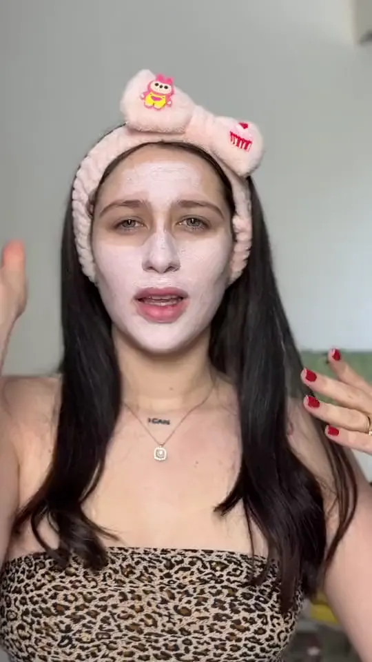
Transiciones
Edición y estrategia de redes con asistencia de marketing
Ver en Instagram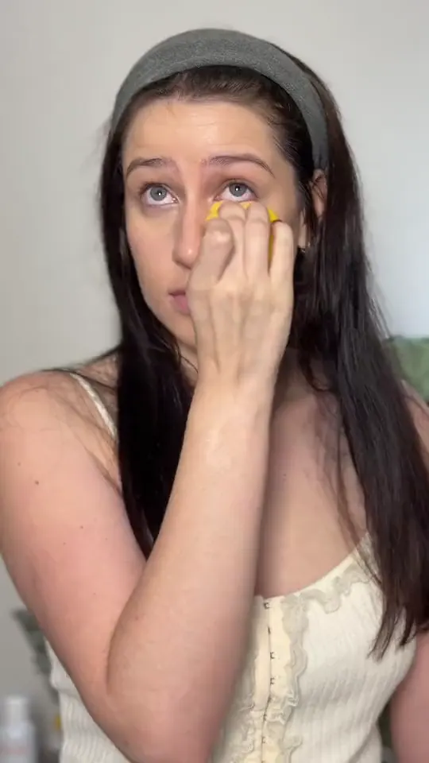
Beauty
Edición y estrategia de redes con asistencia de marketing
Ver en Instagram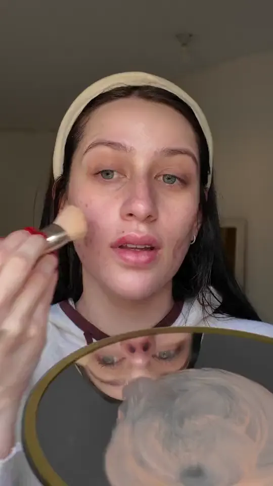
Beauty
Edición y estrategia de redes con asistencia de marketing
Ver en Instagram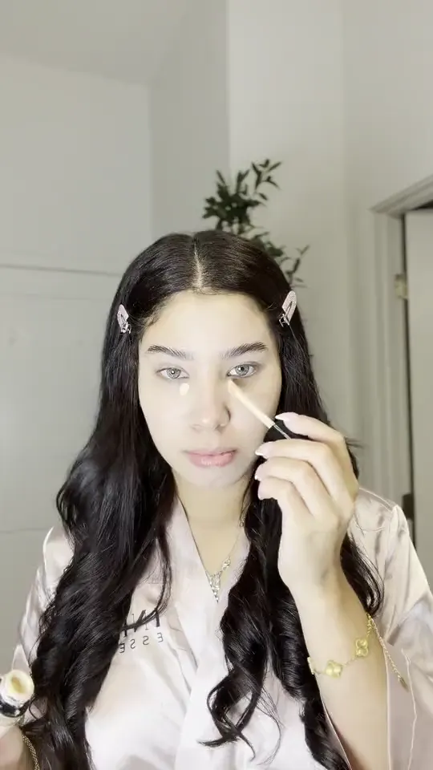
Beauty
Edición y estrategia de redes con asistencia de marketing
Ver en Instagram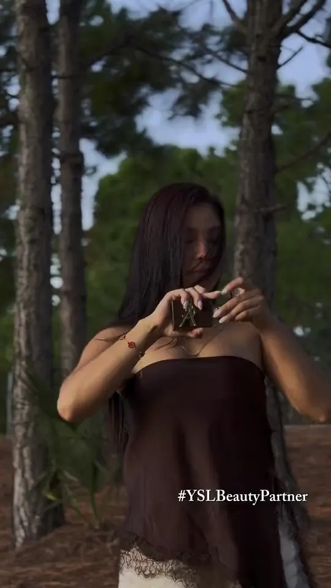
Campaña
Edición y estrategia de redes con asistencia de marketing
Ver en Instagram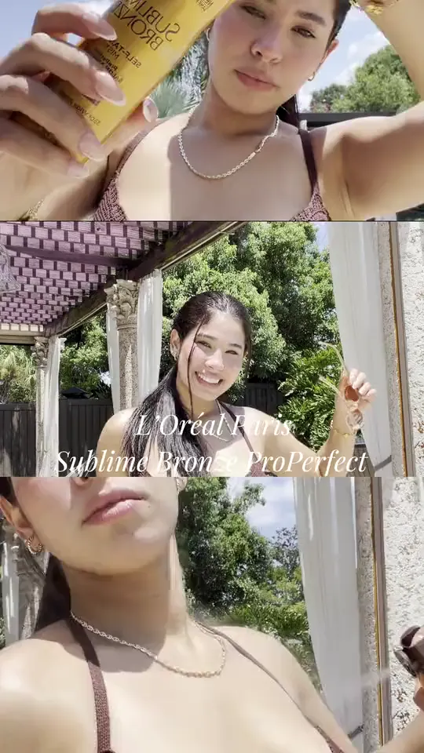
Campaña
Edición y estrategia de redes con asistencia de marketing
Ver en InstagramHacemos una llamada o videollamada para conocernos, entender tu marca y organizar el trabajo.
Definimos juntos colores, tipografías y estilo musical.
Preparo una carpeta personal y un plan mensual con ideas de videos y días de grabación.
Edito dentro del plazo acordado según el video: 48 horas, 24 horas, 12 horas o 6 horas.
Hago los cambios que necesites; la cantidad de revisiones depende del plan.
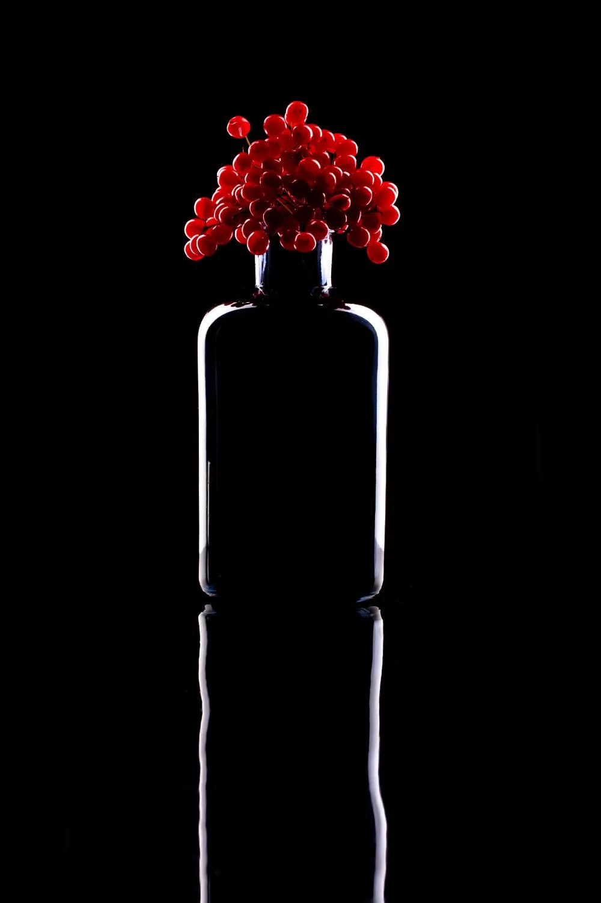
Edito desde los 12 años, y a los 17 lo convertí en mi profesión. Soy curiosa y dedicada, y en mi tiempo libre me encuentro entre series, libros y videojuegos. Lo que más disfruto es ver la reacción de mis clientes cuando reciben el resultado.
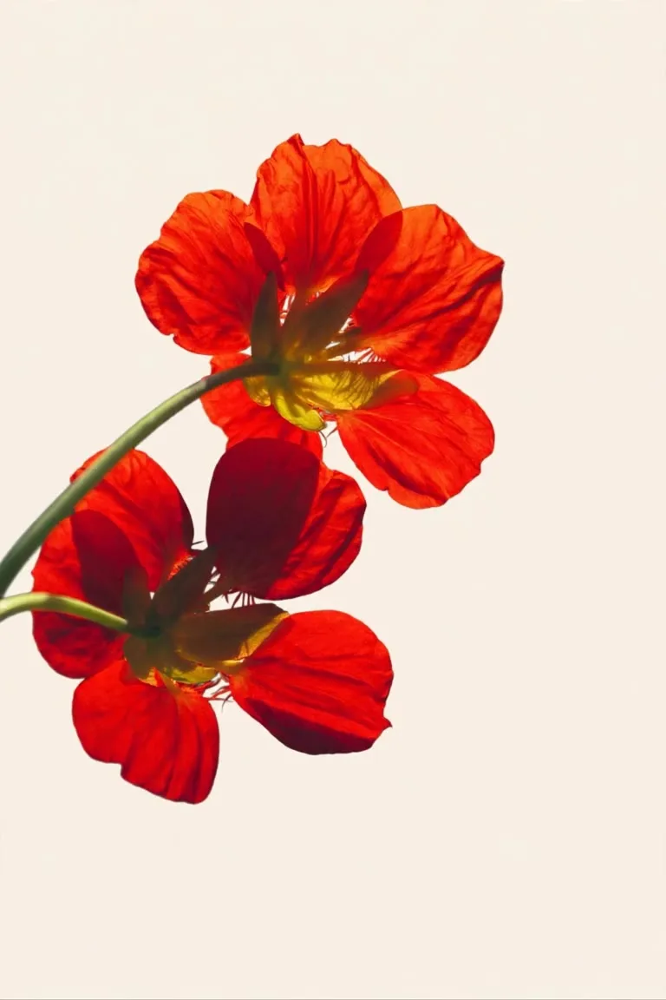
¿Tienes un video, una idea o un proyecto en mente? Cuéntame y lo hacemos realidad.
Pequeñas cosas que me hacen ser yo.